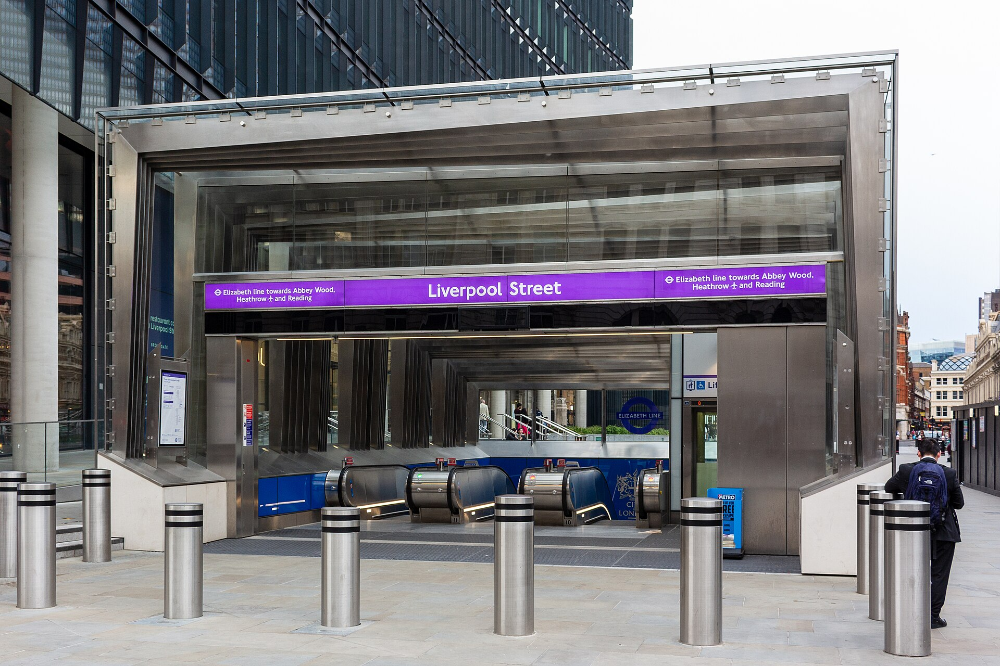
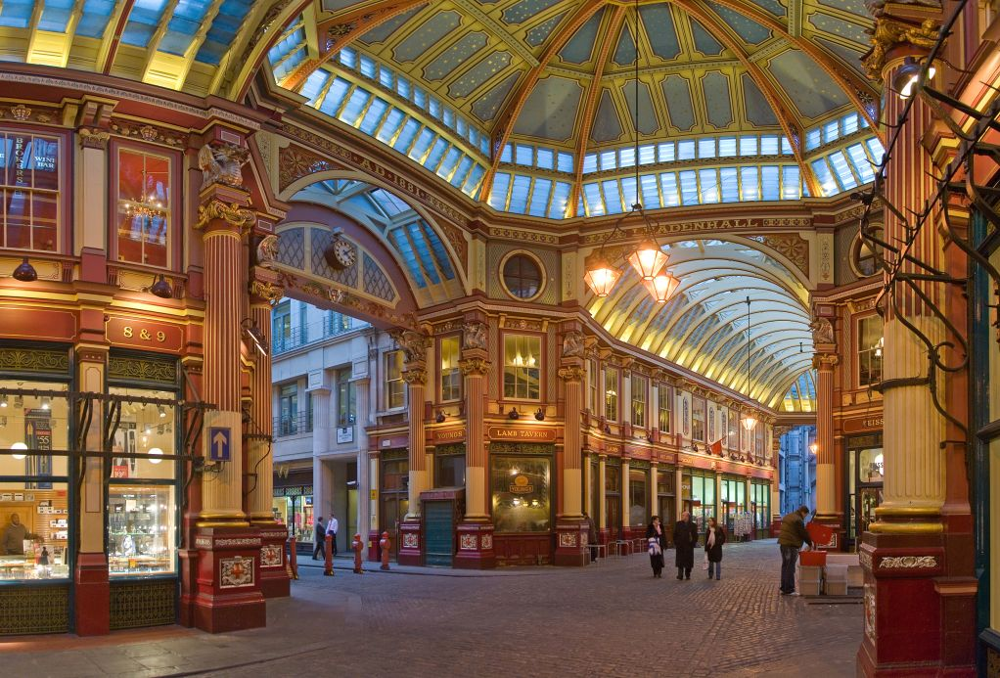

Grand TourSéquences prêtes à l'emploi · Français, anglais · Tous niveaux
English · Première baccalauréat professionnel · CFA apprentices · B1 to B1+
London: Global Metropolis
Urban geography and professional services in a world city · 7 lessons of 52 minutes · commerce, accueil, événementiel, transport
Gérer les onglets. Décochez un onglet pour le masquer. Le choix est retenu sur cet appareil.
Sans JavaScript, tous les onglets restent visibles à la suite.
Claude Monet, The Thames below Westminster, vers 1871, National Gallery, Londres, domaine public, Wikimedia Commons.
In Context
Compare, advise, write
Write a 120-to-150-word email to a client: recall the request, compare two options and recommend one.
Introduction
What makes London a global city, and how can I use what I know about it to advise a client from my entreprise d'accueil?
Tower Bridge et les tours de la City, vus depuis la Tamise.
Impératifs du Bulletin officiel
À projeter ou à laisser en tête de fiche, pour toute la séquence. Le programme de langues vivantes de la voie professionnelle (BO spécial n° 5 du 11 avril 2019) n'a pas d'axes numérotés comme le lycée général et technologique. Il organise le travail en deux contextes d'expression et de communication, et en thèmes d'études pour les repères culturels. C'est cet ancrage que la séquence suit.
Ancrage dans le programme
Contexte principal : « situations et actes de la vie professionnelle ». Renseigner et conseiller un client, présenter et valoriser un produit ou un service, traiter une demande par écrit, s'exprimer dans un échange professionnel.
Contexte croisé : « situations et actes de la vie quotidienne, personnelle, sociale et civique ». Se déplacer dans une grande ville, se loger, vivre dans une ville multiculturelle.
Thème d'études pour les repères culturels : lieux symboliques et grandes villes du monde anglophone ; vie sociale et économique.
Problématique
What makes London a global city, and how can I use what I know about it to advise a client from my entreprise d'accueil?
Qu'est-ce qui fait de Londres une ville-monde, et comment m'en servir pour conseiller un client de mon entreprise d'accueil ?
Niveau CECRL
Entrée attendue : B1 (fiches adaptées pour les apprentis encore en A2+).
Niveau visé en fin de séquence : B1+, avec des passages vers B2 en interaction orale pour les plus à l'aise.
Les cinq activités langagières du BO
La séquence, y compris la tâche finale, les couvre toutes. Chaque lesson annonce celles qu'elle entraîne.
CE : compréhension de l'écrit.
CO : compréhension de l'oral.
EE : expression écrite.
EOC : expression orale en continu.
IO : interaction orale.
Objectifs lexicaux
La ville : borough, business district, headquarters, commuter, retail, leisure, venue.
Les déplacements et les coûts : Congestion Charge, peak hours, fare, river bus, the Tube, the Elizabeth line.
Le dialogue professionnel : enquiry, quote, request, concern.
Les amorces de conversation (conversation openers) : How can I help you today? ; Before we start, may I ask... ; Thanks for getting back to me.
Le lexique du report : say, tell, ask, explain, confirm.
Objectifs grammaticaux
Le comparatif et le superlatif, avec modificateurs : much, far, a lot, considerably, slightly, marginally, a bit ; not as ... as.
Les modaux du conseil : should, could, I would recommend, you might want to.
Le discours direct et le discours indirect (reported speech) : say et tell ; concordance des temps ; changement des repères de temps et de lieu (today, tomorrow, here, this) ; questions et demandes rapportées (She asked if... ; She asked me to...).
Les réponses adaptées au contexte : registre soutenu avec un client, registre plus direct avec un collègue ; formules de politesse.
Sept lessons de 52 minutes montre en main pour les apprentis de Première baccalauréat professionnel en CFA, en alternance, soit 6 h 04 de cours, plus une lesson de secours de 52 minutes. Les métiers visés sont le commerce et la vente, l'accueil et la relation clients, l'hôtellerie et l'événementiel, le transport et la logistique. La séquence s'appuie sur l'expérience réelle de la relation client, déjà présente en entreprise d'accueil, et la valorise en anglais, surtout dans les dialogues.
Fiche d'identité
Rubrique
Détail
Public
Apprentis de Première baccalauréat professionnel en CFA, en alternance.
Niveau
Entrée attendue : B1 (fiches adaptées pour les apprentis encore en A2+). Niveau visé : B1+, avec des passages vers B2 en interaction orale pour les plus à l'aise.
Durée
7 lessons de 52 minutes montre en main, soit 6 h 04 de cours, plus une lesson de secours de 52 minutes. Chaque déroulé va de 0 à 52, sans débordement. Si une activité n'est pas finie, on applique la Plan B indiquée en bas de la lesson.
Programme
Programme de langues vivantes de la voie professionnelle, BO spécial n° 5 du 11 avril 2019. Deux contextes, pas d'axes numérotés. Contexte principal : situations et actes de la vie professionnelle. Contexte croisé : se déplacer dans une grande ville, vivre dans une ville multiculturelle. Thème d'études : lieux symboliques et grandes villes du monde anglophone ; vie sociale et économique.
Auteure
Madame Carole Paoli Pompougnac, professeure d'anglais et de français.
CE : compréhension de l'écrit. CO : compréhension de l'oral. EE : expression écrite. EOC : expression orale en continu. IO : interaction orale.
Mise en situation professionnelle
You work for your entreprise d'accueil. A foreign client, Ms Ingrid Larsen, events manager for a Danish company, wants to send a team of 40 employees to London for a three-day conference next spring. She hesitates between a venue in the City and a venue in Canary Wharf. She asks your company for advice: where to stay, how to get around, what it will cost, and what the team can do in the evenings.
Chaque apprenti traite la demande sous l'angle de son métier :
Commerce et vente : proposer une visite d'un grand centre commercial (Westfield Stratford City) et comparer deux offres.
Accueil et hôtellerie : conseiller un hébergement et un lieu de réception, gérer les objections sur le prix.
Événementiel : comparer les deux lieux de conférence et construire le programme des trois jours.
Transport et logistique : organiser l'arrivée depuis Heathrow, les trajets du groupe et la livraison du matériel dans la zone du péage urbain (Congestion Charge).
Tâche finale, évaluation sommative
Elle couvre les cinq activités langagières du BO, plus la grammaire (discours direct et indirect, amorces, registre) et le lexique. Le détail, les barèmes et les fiches imprimables sont dans l'onglet Évaluations et grilles.
Lesson 6, écrite. Reading (8 min), compréhension de l'oral (8 min), puis un email au client (120 à 150 mots) qui rappelle la demande au discours indirect, compare deux options et recommande l'une d'elles.
Lesson 7, orale. Un pitch de 2 minutes pour présenter l'option retenue, suivi de 3 minutes d'échange avec le client, qui exprime des doutes. On reformule le doute au discours indirect.
Vue d'ensemble des lessons
Lesson
Titre
Activités
Durée
Lesson 1
Welcome to a world city
CE, EOC, diagnostic
52 min
Lesson 2
Three districts, three jobs
CE, EOC, ponctuelle 1 (8 min)
52 min
Lesson 3
Getting around: Tube or river bus?
CO, comparatifs
52 min
Lesson 4
What the client said
IO, EE, ponctuelle 2 (5 min)
52 min
Lesson 5
Four steps to a good sale
IO, ponctuelle 3 (8 min)
52 min
Lesson 6
Summative assessment écrite: CE, CO, email
CE, CO, EE
52 min
Lesson 7
Summative assessment orale: the pitch
EOC, IO
52 min
Plan B
London Fact Swap
IO, CE, EE
52 min
Entre deux périodes au CFA, chaque apprenti réalise une petite mission dans son entreprise d'accueil (Fiche 8), avec l'accord du maître d'apprentissage. Aucune donnée personnelle de client, aucun document confidentiel.
Objectifs grammaticaux : prétérit des dates (was founded, opened, destroyed).
Situer Londres, faire le point sur le niveau, installer la mise en situation.
Voyageurs sur un quai du métro londonien, le long d'une rame.
Look at the photograph. What do you know about London? Have you ever met a client from London at work?
The client's request
Ms Ingrid Larsen wants to send a team of 40 employees to London for a three-day conference. She hesitates between a venue in the City and a venue in Canary Wharf. She asks for advice: where to stay, how to get around, what it will cost, and what the team can do in the evenings.
Note your job and the angle you will take.
Fiche 0 · Where am I? diagnostic
Circle the right answer or complete. No grade.
London is the capital of: a) England only b) the United Kingdom c) Ireland
London is on the river: a) Thames b) Seine c) Severn
The London Underground is also called: a) the Metro b) the Subway c) the Tube
A person who travels to work every day is a: a) tourist b) commuter c) customer
The bus is cheap. The taxi is not. The bus is ________ than the taxi.
London is ________ (expensive) than my town.
Canary Wharf has some of ________ modern buildings in London.
The main office of a company is its ________.
Ask a client about money: « ________ is your budget? »
Write two sentences about your job in your entreprise d'accueil.
How do I feel about English today? I can understand a short text: Not yet / Almost / Yes. I can speak for 30 seconds: Not yet / Almost / Yes.
Answer key
1 b
2 a
3 c
4 b
5 cheaper
6 more expensive
7 the most
8 headquarters
9 What is your budget?
10 réponse libre (deux phrases correctes = B1).
Lecture : 8 à 10 bonnes réponses, B1 acquis ; 5 à 7, A2+ ; moins de 5, prévoir les fiches adaptées et un binôme tuteur.
The Nine-Million City
London is one of the biggest cities in Europe. More than 9 million people live in Greater London. The city is divided into 32 boroughs, plus the City of London, the small historic centre. London is very diverse: more than 300 languages are spoken in its schools.
London has a long history. The Romans founded it around AD 47 to 50 and called it Londinium. In September 1666, the Great Fire destroyed a large part of the old city. In January 1863, the world's first underground railway, the Metropolitan Railway, opened between Paddington and Farringdon Street. In 1981, the government created a corporation to regenerate the old Docklands in East London. Today, every day, millions of commuters travel into central London to work.
Exercise A. True or False? Justify with words from the text.CE
More than 9 million people live in Greater London.
London has 33 boroughs.
More than 300 languages are spoken in London schools.
The Great Fire happened in 1863.
The first underground railway opened in 1863.
The Docklands regeneration began in 1666.
Answer key
1 True (more than 9 million)
2 False (32 boroughs plus the City of London)
3 True
4 False (it was the Great Fire of 1666)
5 True (10 January 1863)
6 False (the Docklands regeneration began in 1981)
Speaking.EOC In pairs, present three facts about London in 30 seconds. Start with: « Did you know that... »
Lesson summary
Copy it into your exercise book.
London is a global city. More than 9 million people live in Greater London. It has 32 boroughs plus the City of London. More than 300 languages are spoken in London schools. London was founded by the Romans around AD 47 to 50 and was called Londinium.
Devoirs. Apprendre la trace écrite. Fiche 1, exercice B : associer la date et l'événement.
AD 47 to 50 · 1666 · 1863 · 1981 · 2012 · 2022
the Olympic Games · Londinium is founded · the Elizabeth line opens · the Great Fire · the start of the Docklands regeneration · the first underground railway
Answer key
AD 47 to 50: Londinium founded
1666: the Great Fire
1863: the first underground railway
1981: the start of the Docklands regeneration
2012: the Olympic Games
2022: the Elizabeth line opens
Déroulé, 52 minutes montre en main
On avance d'étape en étape, montre en main, sans ouvrir une activité qui ferait dépasser 52 minutes.
Minutes
Ce que l'on fait
0 à 2
Météo de la classe. Papiers pliés. Rien n'est projeté.
2 à 7
Accroche. Projetez l'image de la Tamise. Demandez : « What do you know about London? Have you ever met a client from London at work? » Notez les mots au tableau.
7 à 17
Diagnostic, Fiche 0, 10 questions, individuel, sans note. Ramassez.
17 à 20
Mise en situation. Lisez la demande de Ms Larsen, projetée. Chaque apprenti note sur sa fiche son métier et l'angle qu'il prendra.
20 à 33
Reading, Fiche 1. Lecture individuelle, puis vrai ou faux avec justification.
33 à 40
Correction collective. Projetez le corrigé après la mise en commun.
40 à 47
Expression orale en continu. En binôme, chacun présente trois faits sur Londres en 30 secondes, avec l'amorce « Did you know that... ».
47 à 52
Lesson summary dans le cahier ou le classeur. Annoncez les devoirs.
Si ce n'est pas fini : Plan B « Three facts ». Passez tout de suite à la trace écrite. L'exercice B part en devoirs. Si le diagnostic n'est pas terminé, il est rendu à la Lesson 2.
Fiche 1 adaptée · The Nine-Million City
Read. One idea per line.
London is a big city.
More than 9 million people live in Greater London.
London has 32 boroughs plus the City of London.
More than 300 languages are spoken in London schools.
The Romans founded London around AD 47 to 50.
The Great Fire was in 1666.
The first underground railway opened in 1863.
True or False? Circle.
More than 9 million people live in London. True / False
Objectifs grammaticaux : phrases de présentation au présent, there is / there are.
Comprendre les trois grands quartiers d'activité ; acquérir le premier lexique.
La Banque d'Angleterre, dans la City, sous un ciel couvert.
Tours de bureaux à Canary Wharf, au bord de l'eau, avec une passerelle.
Une rue commerçante du West End, avec une entrée du métro.
Gustave Doré (dessin) et Adolphe François Pannemaker (gravure), Over London by Rail, 1872, Yale Center for British Art, domaine public, Wikimedia Commons. Recadrage de la planche.
Text 1. The Square Mile
The City of London is the oldest part of London. People call it the Square Mile because it is very small. It is a historic financial district: the Bank of England is here, next to many banks and insurance companies. St Paul's Cathedral is in the City too.
Text 2. Canary Wharf
Canary Wharf is in East London, on the site of the old West India Docks. After the docks closed, the area was regenerated from 1981. Today it is a modern business district with tall office towers, where many banks and media companies have their headquarters.
Text 3. The West End
The West End is the heart of retail and leisure in London. Shoppers go to Oxford Street, visitors walk around Covent Garden, and many people go to the theatre to see a musical in "Theatreland".
Exercise A. Fill in the identity card of your district.CE Name · Where? · What kind of district? · Famous places · Who works or goes there?
Answer key
The Square Mile: the City of London; historic financial district; Bank of England, St Paul's Cathedral; many banks and insurance companies.
Canary Wharf: East London, on the old West India Docks; modern business district with tall office towers; banks and media companies; built after 1981.
The West End: central London; retail and leisure; Oxford Street, Covent Garden, theatres (Theatreland).
Exercise B. Present your district to your group in one minute.EOC
Exercise C. Building your vocabulary. Match.
headquarters
Pictogramme de deux tours de bureaux, pour le mot headquarters.
commuter
Pictogramme d'un train, pour le mot commuter.
retail, leisure
Pictogramme d'un sac et d'un cloche, pour retail et leisure.
urban regeneration
Pictogramme d'une grue et d'un bâtiment, pour urban regeneration.
headquarters
commuter
commuter belt
retail
leisure
urban regeneration
a. a person who travels to work every day · b. selling goods to the public in shops · c. improving an old area of a city · d. the main office of a company · e. time when you are not working, for fun and rest · f. the towns around a city where commuters live
Say it right: comMUter · headQUARters · re-geneRAtion · LEIsure
Answer key
1 d (headquarters = the main office of a company)
2 a (commuter = a person who travels to work every day)
3 f (commuter belt = the towns around a city where commuters live)
4 b (retail = selling goods to the public in shops)
5 e (leisure = time when you are not working, for fun and rest)
6 c (urban regeneration = improving an old area of a city)
Lesson summary
Copy it into your exercise book.
The Square Mile (the City of London) is the historic financial district. Canary Wharf is a newer business district built on the old docks. The West End is the area for retail and leisure: shops, theatres and restaurants.
Devoirs. Apprendre le lexique. Écrire 3 phrases : « In my entreprise d'accueil, a client from London could ask me about... »
Answer key
Exemples : « In my entreprise d'accueil, a client from London could ask me about the price of a room / the delivery time / the nearest station / a product's size. » Valoriser toute phrase liée au métier réel.
Déroulé, 52 minutes montre en main
On avance d'étape en étape, montre en main, sans ouvrir une activité qui ferait dépasser 52 minutes.
Minutes
Ce que l'on fait
0 à 2
Météo de la classe.
2 à 8
Retour sur les devoirs. Correction de l'exercice B, dates et événements.
8 à 22
Reading, Fiche 2, trois textes courts. Groupes de trois : chaque apprenti lit un texte et remplit la fiche d'identité de son quartier.
22 à 30
Mise en commun. Chaque apprenti explique son quartier aux deux autres, en anglais, une minute.
30 à 40
Building your vocabulary, Fiche 2, exercice C. Répétition de l'accent de mot : comMUter, headQUARters, re-geneRAtion.
40 à 48
Évaluation ponctuelle 1, Fiche 2, partie D, 8 minutes: lexique des quartiers et compréhension. Individuel. Échange des copies, score pour l'apprenti seul. La fiche est aussi dans l'onglet Évaluations et grilles.
48 à 52
Lesson summary and devoirs.
Si ce n'est pas fini : Plan B « Which district? ». Vous gardez la ponctuelle de 8 minutes. L'exercice C part en devoirs.
Fiche 2 adaptée · Three districts
The Square Mile (the City): banks (banques).
Canary Wharf: modern offices (bureaux modernes).
The West End: shops and theatres (magasins et théâtres).
Word bank: headquarters = siège social · commuter = navetteur · retail = commerce de détail · leisure = loisirs
Complete with the word bank.
A person who travels to work every day: a ________.
Ancrage dans le programme : contexte quotidien (se déplacer) et contexte professionnel (conseiller un trajet).
Niveau CECRL : B1, visé B1+.
Language activities : CO, EOC.
Objectifs lexicaux : river bus, the Tube, travelcard, crowded, reliable, pier.
Objectifs grammaticaux : comparatifs avec modificateurs (much, far, slightly, marginally, not as ... as).
Comprendre un dialogue sur les transports ; maîtriser les comparatifs avec modificateurs.

Photo: The wub, entrée de l'Elizabeth line, gare de Liverpool Street, 3 juin 2022, CC BY-SA 4.0, Wikimedia Commons.
Photo: Stanley Hapgood, Earth Clipper (Uber Boat by Thames Clippers) à Greenwich, 27 août 2023, CC BY-SA 4.0, Wikimedia Commons.
Exercise A. First listening.CO Who is speaking? Where are they? Where must they go?
Answer key
Sarah and David ; on a platform at Westminster ; they must go to Canary Wharf for a meeting.
Exercise B. Listen and complete.
The Tube is ________ ________, of course.
The river bus is ________ ________ ________.
But it's ________ ________ ________.
And it's ________ than the Tube.
The river bus is ________ ________ ________ when there are big events.
With a travelcard it's ________ ________.
At this time it's ________ ________ ________ ________ the Tube.
Answer key
1 much faster
2 slightly more expensive
3 far more comfortable
4 quieter
5 considerably more reliable
6 marginally cheaper
7 not as crowded as
Exercise C. True or False?
The river bus is quieter than the Tube.
The river bus is faster than the Tube.
The Tube is busy today.
Sarah and David take the Tube.
Answer key
1 True (the river bus is quieter than the Tube)
2 False (the Tube is faster)
3 True
4 False (they take the river bus)
Grammar box. Comparing with modifiers
A big difference: much / far / a lot / considerably + comparative. The Tube is much faster.
A small difference: slightly / marginally / a bit + comparative. The boat is slightly more expensive.
Short adjectives: fast, faster. Long adjectives: expensive, more expensive. Irregular: good, better ; bad, worse.
Equality and negation: not as ... as. The boat is not as fast as the Tube.
Say it right: than = /ðən/, short and weak. faster = /ˈfɑːstə/.
Exercise D (homework). Complete with a modifier and a comparative.
The Tube / the bus (fast)
A taxi / the Tube (expensive)
The river bus / the Tube (slow)
Walking / cycling (not as ... as, fast)
The Elizabeth line / an old train (comfortable)
A weekly ticket / seven single fares (cheap)
Answer key
1 The Tube is much faster than the bus.
2 A taxi is far more expensive than the Tube.
3 The river bus is slightly slower than the Tube.
4 Walking is not as fast as cycling.
5 The Elizabeth line is considerably more comfortable than an old train.
6 A weekly ticket is marginally cheaper than seven single fares.
Accepter toute phrase correcte avec un modificateur adapté.
Script audio (Sarah and David)
À lire à deux voix ou à enregistrer. Durée : environ 1 minute 30. Les mots en gras sont les réponses du texte à trous. Aucun prix ni temps de trajet n'est donné, car ils changent souvent.
SARAH: David, we have a meeting at Canary Wharf in an hour. Shall we take the Tube?
DAVID: We could. The Tube is much faster, of course. But I hate it at this time of day.
SARAH: What about the river bus? There's a pier right here at Westminster.
DAVID: The river bus is slightly more expensive, but it's far more comfortable. You can sit down and look at the river.
SARAH: And it's quieter than the Tube. I can prepare my notes on the way.
DAVID: True. And today the Tube is busy because of the football. The river bus is considerably more reliable when there are big events.
SARAH: Is there a discount with a travelcard?
DAVID: Yes, with a travelcard it's marginally cheaper. And at this time it's not as crowded as the Tube.
SARAH: Perfect. River bus it is. We'll arrive a bit later, but much more relaxed.
DAVID: Let's go, the next boat leaves in five minutes.
Lesson summary
Copy it into your exercise book.
To compare, I use: much / far / a lot / considerably + comparative (a big difference), slightly / marginally / a bit + comparative (a small difference).
The Tube is much faster than the river bus. The river bus is slightly more expensive. The bus is not as fast as the Tube.
Déroulé, 52 minutes montre en main
On avance d'étape en étape, montre en main, sans ouvrir une activité qui ferait dépasser 52 minutes.
Minutes
Ce que l'on fait
0 à 2
Météo de la classe.
2 à 6
Anticipation. « How do you get to work? Which is faster, which is cheaper? » Réponses libres.
6 à 11
Première écoute : qui parle, où, de quoi, Fiche 3, exercice A.
11 à 22
Deuxième et troisième écoutes : texte à trous, exercice B, puis vrai ou faux, exercice C.
22 à 26
Correction. Projetez le corrigé.
26 à 38
Grammaire. Repérez les comparatifs dans le dialogue, puis la règle : much / far / a lot / considerably + comparatif ; slightly / marginally / a bit + comparatif ; not as ... as. Prononciation : than /ðən/, faster /ˈfɑːstə/.
38 à 47
Expression orale en continu. Chaque apprenti compare deux moyens de transport qu'il utilise pour aller à son entreprise d'accueil, avec deux modificateurs.
47 à 52
Lesson summary and devoirs.
Si ce n'est pas fini : Plan B « Two comparatives ». Chaque apprenti dit une seule phrase avec un modificateur. L'exercice D part en devoirs.
Fiche 3 adaptée · Comparing
Big difference: much faster.
Small difference: slightly cheaper.
Not the same: not as fast as.
Complete. Word bank: much · slightly · than
The Tube is ________ faster than the boat.
The boat is ________ more expensive.
The Tube is faster ________ the bus.
Listening: tick the words you hear. faster · quieter · cheaper · comfortable · crowded
Objectifs grammaticaux : discours direct et discours indirect (say / tell, concordance des temps, changement des repères) ; réponses adaptées au contexte (client ou collègue).
Ouvrir une conversation professionnelle ; choisir le bon registre ; passer du discours direct au discours indirect.
Grammar box. From her words to yours
Direct speech: Ms Larsen said: « I need a venue for 40 people. »
Reported speech: She said (that) she needed a venue for 40 people. She told me (that) she needed a venue for 40 people.
say + (that). tell + someone + (that).
Concordance des temps : I need devient she needed ; I will devient she would ; I can devient she could ; I have booked devient she had booked.
Repères : today devient that day ; tomorrow devient the next day ; yesterday devient the day before ; here devient there ; this devient that.
Questions : She asked if / whether... ; She asked where / when / what...
Demandes : She asked me to...
Exercise A. Choose the right opener.IO
A client has just arrived at the desk.
You call the client back.
You start the meeting.
You speak to a colleague about the same request.
a. Thanks for getting back to me. I just wanted to go back to your request.
b. Can you check this quote for me?
c. Good morning. How can I help you today?
d. Before we start, may I ask a few questions?
Answer key
1 c (a client has just arrived)
2 a (you call the client back)
3 d (you start the meeting)
4 b (you speak to a colleague)
Exercise B. Client or colleague? Choose the reply that fits the context.
The client finds the price high. a) It's expensive, you'll have to deal with it. b) I understand your concern. Let me suggest a slightly cheaper option.
You need a fact from a colleague, quickly. a) Can you check the quote for me, please? b) Dear Sir or Madam, I would be grateful if you would send me the information at your earliest convenience.
You close the proposal with the client. a) Send me the money today. b) Would you like me to send you a quote today?
You report the client's need to a colleague. a) She said she needed a room for 40 people. b) She is like, I want a room, now.
Answer key
1 b (client : I understand your concern. Let me suggest a slightly cheaper option.)
2 a (colleague : Can you check the quote for me, please?)
3 b (client : Would you like me to send you a quote today?)
4 a (colleague : She said she needed a room for 40 people.)
Exercise C. Report what Ms Larsen said.EE
« I need a venue for 40 people. »
« We want to stay for three days. » (use told me)
« Is the City more expensive than Canary Wharf? »
« Send me a quote tomorrow. »
« We can take the river bus. »
Answer key
1 She said (that) she needed a venue for 40 people.
2 She told me (that) they wanted to stay for three days.
3 She asked if the City was more expensive than Canary Wharf. (ou : She asked whether...)
4 She asked me to send her a quote the next day. (tomorrow devient the next day)
5 She said (that) they could take the river bus.
Part D. Quick check (formative, 10 points) formative 1
She ________ me that the date was too early. (said / told)
She ________ that the hotel was too expensive. (said / told)
Direct: « I need a quote. » Reported: She said she ________ a quote.
Direct: « Send it tomorrow. » Reported: She asked me to send it ________.
Direct: « Wait here. » Reported: She asked me to wait ________.
Direct: « Is Canary Wharf quieter? » Reported: She asked ________ Canary Wharf was quieter.
Direct: « Please send a quote. » Reported: She asked me ________ a quote.
Circle the opener for a client who has just arrived: How can I help you today? / Can you check this for me?
The client is worried about the price. The adapted reply is: a) That's your problem. b) I understand your concern. Let me suggest...
Direct: « I want a hotel near Canary Wharf. » Write the reported sentence.
Answer key
1 told (tell + personne)
2 said
3 needed
4 the next day
5 there
6 if / whether
7 to send
8 How can I help you today?
9 b (registre client)
10 She said (that) she wanted a hotel near Canary Wharf.
Lecture : 8 à 10, B1 sur le dialogue ; 5 à 7, reprendre la trace écrite en binôme ; moins de 5, fiche 4 adaptée et tuteur.
Exercise E (homework). Report the dialogue.
SARAH: I have a meeting at Canary Wharf.
SARAH: Shall we take the Tube?
DAVID: The Tube is much faster.
DAVID: The river bus is far more comfortable. (use told her)
SARAH: Please check the next boat. (use asked him to)
Answer key
She said (that) she had a meeting at Canary Wharf.
She asked if they should take the Tube.
He said (that) the Tube was much faster.
He told her (that) the river bus was far more comfortable.
She asked him to check the next boat.
Lesson summary
Copy it into your exercise book.
Opening a conversation: « Good morning. How can I help you today? » With a client I am polite and careful. With a colleague I can be more direct.
Direct speech: Ms Larsen said: « I need a venue for 40 people. »
Reported speech: She said (that) she needed a venue for 40 people. She told me (that) she needed a venue for 40 people.
Say + (that). Tell + someone + (that). Today becomes that day. Tomorrow becomes the next day. Here becomes there.
Déroulé, 52 minutes montre en main
On avance d'étape en étape, montre en main, sans ouvrir une activité qui ferait dépasser 52 minutes.
Minutes
Ce que l'on fait
0 à 2
Météo de la classe.
2 à 8
Accroche. « What do you say first when a client walks in? What do you say to a colleague? » Notez quatre amorces au tableau.
8 à 18
Amorces et registre, Fiche 4, exercices A et B. Travail en binôme, puis mise en commun rapide.
18 à 23
Correction. Projetez le corrigé.
23 à 38
Discours direct et discours indirect. Installez la règle (say / tell, concordance, repères). Les apprentis font l'exercice C : ils rapportent les paroles de Ms Larsen.
38 à 43
Correction de l'exercice C.
43 à 48
Évaluation formative 1, Fiche 4, partie D, 10 items. Échange des copies. Chaque apprenti note son score pour lui seul.
48 à 52
Lesson summary and devoirs.
Si ce n'est pas fini : Plan B « She said ». Faites seulement trois phrases au discours indirect, à partir des répliques 1, 2 et 4 de l'exercice C. Si le quiz formatif n'est pas lancé, il ouvre la Lesson 5 (8 minutes) : vous coupez alors l'échauffement de la Lesson 5.
Fiche 4 adaptée · What the client said
Remember.
Direct: « I need a hotel. »
Reported: She said she needed a hotel. She told me she needed a hotel.
Openers. Client: How can I help you today? Colleague: Can you check this, please?
Complete.
She ________ me that the date was late. (said / told)
Direct: « I need a quote. » She said she ________ a quote. (needed)
The client is worried. I say: I understand your concern.
IO 52 minutes montre en main · ponctuelle 3 (8 min)
Impératifs du Bulletin officiel
Ancrage dans le programme : contexte professionnel (conseiller, traiter une objection, conclure).
Niveau CECRL : B1, visé B1+.
Language activities : IO, formative 2.
Objectifs lexicaux : identify needs, compare options, handle doubts, close a proposal, quote, Congestion Charge.
Objectifs grammaticaux : modaux du conseil ; reprise du discours indirect (« She said she wanted... »).
Maîtriser les quatre étapes du conseil client ; réinvestir amorces, registre et discours indirect.
Le Queen Elizabeth Olympic Park à Stratford, avec le stade, le canal et la tour Orbit.
La place du centre commercial Westfield Stratford City.
Une rangée de maisons en terrasse à Londres, avec des jardins sur rue.
Four steps to a good sale
Identify needs. What is your budget? · How many people are coming? · What dates are you thinking of? · Do you prefer a historic or a modern place?
Compare options. Option A is far more central, but slightly more expensive. · Option B is considerably cheaper and much more modern.
Handle doubts. I understand your concern. · That's a good point. Let me suggest... · If budget is a priority, you could...
Close the proposal. Shall I send you a quote today? · Would you like me to book it? · I would recommend Option B. Shall we go ahead?
Report the need. You said you wanted a venue for 40 people. · She told me she was worried about the price.
Useful figures, to advise the client
Since 2 January 2026, the Congestion Charge is £18 a day if you pay on the day or in advance.
The City is historic and close to the West End. Canary Wharf is more modern, built on the old docks, and linked to Heathrow by the Elizabeth line.
An Elizabeth line train carries up to 1,500 passengers.
Link to my workplace. At my entreprise d'accueil, I identify a client's needs when... · I compare options when... · I handle doubts when...
Say it right. Closed question, voice goes up: Would you prefer the City? Open question, voice goes down: What is your budget?
IO Formative 2: groupes de trois, 5 minutes par tour. Le conseiller ouvre l'échange, rapporte au moins une demande, et adapte sa réponse.
Lesson summary
Copy it into your exercise book.
1. Identify needs: « What is your budget? How many people are coming? »
2. Compare options: « The City is slightly more expensive, but it is far more central. »
3. Handle doubts: « I understand your concern. Let me suggest... »
4. Close the proposal: « Shall I send you a quote today? »
Report the need: « You said you wanted a venue for 40 people. »
Devoirs. Préparer le plan de l'email (Fiche 6, partie A).
Déroulé, 52 minutes montre en main
On avance d'étape en étape, montre en main, sans ouvrir une activité qui ferait dépasser 52 minutes.
Minutes
Ce que l'on fait
0 à 2
Météo de la classe.
2 à 8
Les quatre étapes, Fiche 5. « How do you do this at work? » Chaque apprenti relie une étape à un geste de son entreprise d'accueil, et peut rapporter une phrase entendue : « A client said that... »
8 à 16
Phrases utiles : répétition chorale, intonation des questions. Lecture rapide de la boîte de chiffres (Fiche 5) : de quoi a-t-on besoin pour conseiller Ms Larsen.
16 à 22
Préparation du jeu de rôle en binôme (cartes client : budget, nombre de personnes, doutes).
22 à 36
Jeu de rôle en groupes de trois, pratique (client, conseiller, observateur avec la grille). 5 minutes par tour, deux tours. Le conseiller ouvre l'échange, rapporte au moins une demande, et adapte sa réponse.
36 à 44
Évaluation ponctuelle 3, 8 minutes, compte rendu écrit: amorce, discours indirect, registre, une recommandation. La fiche est dans l'onglet Évaluations et grilles.
44 à 48
Retour bref. L'observateur donne une réussite et un conseil, si le tour de pratique a eu lieu.
48 à 52
Lesson summary and devoirs.
Si ce n'est pas fini : Plan B « One round ». Un seul tour de pratique, puis la ponctuelle écrite de 8 minutes. Le plan de l'email part en devoirs.
Objectifs grammaticaux : comparatifs avec modificateurs ; une phrase au discours indirect (« You said you wanted... »).
Rédiger un email professionnel qui rappelle la demande, compare et recommande.
The request
Ms Ingrid Larsen, events manager for a Danish company, writes to your company: she wants to bring 40 employees to London for a three-day conference next spring. She hesitates between a venue in the City and a venue in Canary Wharf. She wants to know where to stay, how to get around, the costs, and what to do in the evenings.
Your task. Write an email (120 to 150 words). Remind her of her request with reported speech (You said you wanted...). Compare the two options. Recommend one. Use your trade: commerce and sales, reception and hospitality, events, or transport and logistics.
Part A. Plan. Greeting · Thank the client · Remind her of the request · Option 1 · Option 2 · My recommendation and why · A question to close · Closing and signature.
Useful phrases. Thank you for your enquiry. · You said you wanted... · We have compared... · However, ... · I would recommend... because... · You might want to... · Would you like me to send you a quote? · Kind regards.
Checklist before I hand it in. A reported-speech sentence? Two options? A recommendation? At least three comparatives with modifiers? A polite greeting and closing? 120 to 150 words?
Exemple d'email, niveau B1+ (environ 150 mots).
Answer key
Subject: Your conference in London: our recommendation
Dear Ms Larsen,
Thank you for your enquiry. You said you wanted a venue for 40 people for a three-day conference, and that you hesitated between the City and Canary Wharf.
The City is far more historic and slightly closer to the West End, which is ideal for evening activities. However, hotels there are considerably more expensive.
Canary Wharf is much more modern and marginally cheaper. It is also very well connected: the Elizabeth line goes directly from Heathrow, and the river bus is a pleasant way to reach central London.
For a group of 40, I would recommend Canary Wharf, because it offers better value and easy transport. I would also suggest avoiding car travel in central London, where the Congestion Charge is £18 a day.
Would you like me to send you a detailed quote?
Kind regards,
Alex Martin, Events Assistant
Devoirs. Préparer le pitch (Fiche 7, partie A : cinq notes-clés, pas de texte rédigé).
Déroulé, 52 minutes montre en main
On avance d'étape en étape, montre en main, sans ouvrir une activité qui ferait dépasser 52 minutes.
Minutes
Ce que l'on fait
0 à 2
Météo de la classe.
2 à 10
Summative assessment, compréhension de l'écrit, 8 minutes. Texte et questions, Fiche 6, partie S1, aussi dans l'onglet Évaluations et grilles. Individuel, sans aide.
10 à 18
Summative assessment, compréhension de l'oral, 8 minutes. Vous lisez le message deux fois (script dans l'onglet Évaluations). Questions, partie S2.
18 à 46
Rédaction de l'email, 120 à 150 mots, partie S3. Dictionnaire papier autorisé. Les apprentis dys ont la fiche adaptée.
46 à 50
Autoévaluation rapide avec la grille apprenti, relecture guidée (une phrase au discours indirect, deux options, une recommandation).
50 à 52
Ramassage. Annoncez les devoirs (préparer le pitch).
Si ce n'est pas fini : Plan B « Finish the email ». Vous ramassez la compréhension et ce qui est écrit de l'email. Les apprentis terminent l'email à la maison, même volume, même grille. Le pitch reste à la Lesson 7.
Fiche 6 adaptée · The client email
Fill in the frame. 80 à 120 mots acceptés, avec la même grille ramenée aux critères essentiels (tâche, organisation, comparatifs, une phrase au discours indirect).
Dear Ms Larsen,
Thank you for your enquiry.
You said you wanted ________ .
Option 1: The City is ________ (far more / slightly more) ________ .
Ancrage dans le programme : contexte professionnel (présenter une offre, interagir avec un client).
Niveau CECRL : B1, visé B1+.
Language activities : EOC, IO, évaluées.
Objectifs lexicaux : les quatre étapes, les amorces.
Objectifs grammaticaux : comparatifs ; discours indirect pour reformuler le doute du client (« So, you said you were worried about the price... »).
Présenter et défendre une offre à l'oral, puis répondre aux doutes du client.

La galerie vitrée du Leadenhall Market, dans la City.
Part A. My five key notes (words only, no full sentences): 1 ________ 2 ________ 3 ________ 4 ________ 5 ________
Structure of my pitch (2 minutes). Hello, my name is... and I work for... · Today I would like to present... · You said you wanted... · First... Second... Finally... · That is why I recommend...
Then the client asks questions (3 minutes). Listen, rephrase (« So, you said you were worried about... »), answer the doubt, suggest a solution, close the proposal.
Pour un groupe de plus de 8 apprentis, prévoir une deuxième lesson de passages, ou faire passer certains apprentis en binôme (un conseiller, un client).
Déroulé, 52 minutes montre en main
On avance d'étape en étape, montre en main, sans ouvrir une activité qui ferait dépasser 52 minutes.
Minutes
Ce que l'on fait
0 à 2
Météo de la classe.
2 à 8
Échauffement. Chaque binôme se répète la première phrase de son pitch.
8 à 47
Passages. Pour chaque apprenti : 2 minutes de pitch, puis 3 minutes d'échange avec le client (le professeur ou un apprenti). Selon l'effectif, les passages se poursuivent au cours suivant ; ceux qui attendent remplissent la grille apprenti et préparent leurs notes.
47 à 52
Bilan. Chaque apprenti écrit une réussite et un objectif pour la prochaine séquence.
Si ce n'est pas fini : Plan B « Next turn ». Les apprentis qui n'ont pas passé le feront au cours suivant, 5 minutes chacun. Ceux qui ont terminé écrivent une phrase : « The client said that... »
Aucun écran, aucun audio. Fiche S à garder imprimée dans le classeur de la salle.
À utiliser si le tableau numérique ou le son ne fonctionnent pas, si le groupe est agité, ou pour un remplacement. Aucun écran, aucun audio. Fiche S (A et B) à garder imprimée dans le classeur de la salle.
Student A. You know: Greater London has more than 9 million inhabitants. · The first underground railway opened in 1863. · The Congestion Charge is £18 a day. · Canary Wharf is built on the old docks.
Ask B: How many boroughs are there? · When was the Great Fire? · How many passengers can an Elizabeth line train carry? · Where is the West End's main shopping street?
Student B. You know: There are 32 boroughs plus the City of London. · The Great Fire was in 1666. · An Elizabeth line train carries up to 1,500 passengers. · Oxford Street is in the West End.
Ask A: How many people live in Greater London? · When did the first underground railway open? · How much is the Congestion Charge? · Where is Canary Wharf built?
Check text
Greater London has more than 9 million inhabitants and 32 boroughs plus the City of London. The Great Fire destroyed much of the city in 1666. The first underground railway opened in 1863. Canary Wharf is built on the old docks, and Oxford Street is the West End's main shopping street. An Elizabeth line train carries up to 1,500 passengers. Drivers pay a Congestion Charge of £18 a day.
Déroulé, 52 minutes montre en main
On avance d'étape en étape, montre en main, sans ouvrir une activité qui ferait dépasser 52 minutes.
Minutes
Ce que l'on fait
0 à 2
Météo de la classe (papiers prévus avec la fiche S).
2 à 6
Consigne au tableau blanc : chaque apprenti A a la moitié des informations, chaque apprenti B l'autre moitié.
6 à 26
Interaction orale : les binômes s'échangent les informations sans montrer leur fiche (« When did the first underground railway open? »).
26 à 36
Reading : les binômes comparent leurs fiches complétées avec le texte de contrôle et corrigent.
36 à 48
Expression écrite : « Write a short message (60 words) to a friend who is visiting London. Give three tips. »
48 à 52
Lesson summary : les cinq faits les plus utiles, recopiés dans le cahier.
Si ce n'est pas fini : arrêtez-vous après l'échange d'informations et faites copier le texte de contrôle.
Lesson 5 · 8 min · Compte rendu: IO, EE, discours indirect
Sommative S1
Lesson 6 · 8 min · CE
Sommative S2
Lesson 6 · 8 min · CO
Sommative S3
Lesson 6 · 28 min · EE (email)
Sommative S4
Lesson 7 · 2 min + 3 min par apprenti · EOC, IO
Les évaluations ponctuelles tiennent dans le minutage de 52 minutes, sans débordement. Si une lesson n'est pas finie, la Plan B conserve la ponctuelle prévue, et le reste passe en devoirs ou à la lesson suivante.
Chaque fiche ci-dessous a son corrigé derrière un bouton Afficher / Cacher, une grille professeur, une grille apprenti, et un bouton pour l'imprimer.
Fiche imprimable
Diagnostique · Lesson 1 · 10 minutes · pas de note
Compétences. Positionnement, lexique de départ, « I can ».
Fiche 0, déjà dans la Lesson 1 : 10 questions et le positionnement « I can ». Individuel, sans note. Tu ramasses pour adapter la suite.
Grille professeur
Pas de note. Tu releves ce qui est déjà en place (lexique de la ville, dates, une phrase simple) et ce qu'il faudra étayer (comparatifs, discours indirect, registre).
Grille apprenti (autoévaluation)
Pour chaque phrase : Not yet / Almost / Yes.
Critère
Not yet
Almost
Yes
I can say three facts about London.
I can name two London districts.
I can link this situation to my entreprise d'accueil.
Évaluation ponctuelle 1 · Lesson 2 · 8 minutes · CE et lexique
Compétences.CE Lexique des quartiers (City, Canary Wharf, West End; headquarters, commuter, retail, leisure).
Individuel. Tu n'aides pas pendant les 8 minutes. Puis échange des copies et score pour l'apprenti seul.
Part D. Quick check (sur 10).
The Bank of England is in: a) Canary Wharf b) the City c) the West End.
Canary Wharf is: a) the oldest part of London b) a modern business district on the old docks c) the main theatre district.
Oxford Street, Covent Garden and Theatreland are in: a) the West End b) the Square Mile c) Stratford.
Headquarters means: a) a commuter train b) a company's main office c) a concert hall.
A commuter is a person who: a) visits museums b) travels to work every day c) sells tickets.
Retail and leisure are typical of: a) the West End b) a quiet village c) a motorway.
Write one sentence: where would you take a banker who works near the Bank of England, and why?
Write one sentence: where would you take a visitor who wants to see a musical, and why?
Questions 1 à 6: 1 point. Questions 7 et 8: 2 points. Total sur 10.
Answer key
1 b (the City / the Square Mile).
2 b.
3 a.
4 b.
5 b.
6 a.
7 Exemple: I would take the banker to the City, because the Bank of England is there. Toute justification juste est acceptée.
8 Exemple: I would take the visitor to the West End, because that is the area for theatres and musicals.
Lecture du score, pour l'apprenti seul: 8 à 10, lexique en place; 5 à 7, reprendre la fiche d'identité des quartiers; moins de 5, Dys-friendly version et tuteur.
Grille professeur (sur 10)
Questions 1 à 6: 1 point par bonne réponse, pas de demi-point.
Questions 7 et 8: 2 points (1 pour le quartier juste, 1 pour une justification compréhensible, même simple).
Commentaire qualitatif d'une ligne. Pas de note dans le bulletin: score pour l'apprenti et pour toi.
Grille apprenti (autoévaluation)
Critère
Not yet
Almost
Yes
I can say what the City, Canary Wharf and the West End are for.
I can use headquarters, commuter, retail and leisure.
I can recommend a district to a client and say why.
Après le jeu de rôle (pratique), 8 minutes d'écrit individuel. Tu ramasses ou tu fais échanger les copies. Score pour l'apprenti, et pour toi.
After the role play, write a short report (5 to 8 lines). Do not write the whole dialogue.
Write the opener you used (or would use) with the client.
Report one thing the client said: You said you wanted... / She said that...
Write one question you asked to identify a need.
Compare two options with a modifier (much, far, slightly, marginally).
Write an adapted reply to a doubt, then a closing question.
2 points par item. Total sur 10.
Answer key
1 Exemple: Good morning. How can I help you today?
2 Exemple: You said you wanted a venue for 40 people. / She said that she was worried about the price.
3 Exemple: What is your budget? / Do you prefer a historic or a modern place?
4 Exemple: The City is far more historic, but Canary Wharf is slightly cheaper.
5 Exemple: I understand your concern. Let me suggest Canary Wharf. Shall I send you a quote today?
On valorise une amorce polie, un report correct, un comparatif avec modificateur, un registre client, une question de conclusion. Les formulations justes autres que les exemples sont acceptées.
Grille professeur (sur 10)
Amorce adaptée au client: 2 points.
Discours indirect correct: 2 points.
Question pour identifier un besoin: 2 points.
Comparatif avec modificateur: 2 points.
Réponse adaptée à un doute et question de conclusion: 2 points.
Grille d'observation du jeu de rôle (pratique, pas de note): l'observateur coche une amorce, deux questions, une demande rapportée, un comparatif, une réponse calme, une conclusion; puis une réussite et un conseil.
Grille apprenti (autoévaluation)
Critère
Not yet
Almost
Yes
I can open the exchange with a polite opener.
I can report what the client said.
I can compare two options and answer a doubt calmly.
Summative assessment finale · Lessons 6 et 7 · les cinq activités langagières
La tâche finale couvre les cinq activités du BO, plus la grammaire (discours direct et indirect, amorces, registre) et le lexique de la ville, des transports et de la relation client. Chaque partie est notée sur 20, en points entiers, sans demi-point. Un commentaire qualitatif accompagne la note. On valorise d'abord la communication. Repères, pour chaque partie sur 20: de 10 à 12, B1 en cours; au-delà de 12 et jusqu'à 16, B1; de 17 à 20, B1+.
Partie
Lesson
Durée
Activité
Note
S1
Lesson 6
8 min
CE
sur 20
S2
Lesson 6
8 min
CO
sur 20
S3
Lesson 6
28 min
EE, email
sur 20
S4
Lesson 7
2 min + 3 min par apprenti
EOC puis IO
sur 20
Total. Sur 80, ramené au besoin sur 20 (diviser par 4). La grammaire et le lexique entrent dans chaque partie, avec un critère dédié à l'écrit et à l'oral.
S1. Reading (sur 20)
Read the message. Then answer the questions. You have 8 minutes.
From: Ingrid Larsen, Events Manager
Subject: Our April conference, 40 colleagues
Dear Team,
Thank you for your help. As I said on the phone, I want to bring 40 colleagues to London for a three-day conference in April. I still hesitate between a venue in the City and a venue in Canary Wharf.
Two points matter to us. First, we land at Heathrow on Tuesday morning, so I need a simple journey to the hotel, without too many changes. Second, our budget is tight: hotels in the centre look considerably more expensive. In the evenings, the team would like restaurants and, if possible, a musical.
Could you compare the two options and recommend one? Please also tell me how we should get around, and whether we should use a car in central London.
Kind regards, Ingrid Larsen
How many colleagues is Ms Larsen bringing, and for how long?
Which two venues does she hesitate between?
Where do they land, and when?
What is her main concern about hotels?
What would the team like to do in the evenings?
Does she want a comparison, a recommendation, or both?
True or false? She has already decided to travel by car in central London. Justify with a word from the text.
Report one thing she said, starting with: She said that...
Items 1 à 7: 2 points. Item 8: 6 points (discours indirect). Total sur 20.
Answer key
1 Forty colleagues, for three days (a three-day conference).
2 A venue in the City and a venue in Canary Wharf.
3 At Heathrow, on Tuesday morning.
4 Hotels in the centre look considerably more expensive; the budget is tight.
5 Restaurants and, if possible, a musical.
6 Both: compare the two options and recommend one. She also asks about getting around.
7 False. She asks whether they should use a car in central London; she has not decided.
8 Exemples: She said that she wanted to bring 40 colleagues to London. She said that she hesitated between the City and Canary Wharf. She said that their budget was tight. Toute phrase juste au discours indirect, fondée sur le texte, est acceptée.
Grille professeur, CE (sur 20)
Informations factuelles (items 1 à 7): 14 points.
Discours indirect fondé sur le texte (item 8): 6 points (0 si absent, 3 si le sens y est avec une erreur de temps, 6 si la phrase est juste).
Le lexique de la consigne (venue, conference, budget, evenings) doit être compris; une erreur de détail n'annule pas un item si le sens est bon.
Grille apprenti, CE
Critère
Not yet
Almost
Yes
I can find the key facts in a client's email (numbers, places, dates).
I can see what the client wants me to do.
I can report one idea from the text with She said that...
S2. Listening (sur 20)
Script à lire deux fois, à voix claire, sans précipitation. (Ce texte n'est pas projeté pendant l'écoute.)
Hello, this is Ingrid Larsen, calling on Monday morning. I am just leaving a short message. You said you would send a first comparison this week. I still prefer a place that is easy to reach from Heathrow. A colleague told me the Elizabeth line goes to Canary Wharf, and that it is much simpler than changing trains several times. I am still worried about the price of hotels in the City. In the evenings, some of the team would like to see a musical in the West End. Could you tell me which option you recommend, and why? Please call me back this afternoon. Thank you. Goodbye.
Listen to the message twice. Then answer. You have 8 minutes in total, including the two listenings.
Who is calling, and when?
What did the company say it would send?
What does she still prefer, and why?
What did a colleague tell her about the Elizabeth line?
What is she still worried about?
What would some of the team like to do in the evenings?
What two things does she ask you to do?
Report one sentence from the message, starting with: She said that... or A colleague told her that...
Items 1 à 7: 2 points. Item 8: 6 points. Total sur 20.
Answer key
1 Ingrid Larsen, on Monday morning.
2 A first comparison, this week.
3 A place that is easy to reach from Heathrow.
4 That the Elizabeth line goes to Canary Wharf, and that it is much simpler than changing trains several times.
5 The price of hotels in the City.
6 See a musical in the West End.
7 Recommend an option and explain why; call her back this afternoon.
8 Exemples: She said that she still preferred a place that was easy to reach from Heathrow. A colleague told her that the Elizabeth line went to Canary Wharf. She said that she was still worried about the price of hotels in the City. Concordance des temps attendue autant que possible; le sens juste est valorisé.
Grille professeur, CO (sur 20)
Informations factuelles (items 1 à 7): 14 points.
Discours indirect (item 8): 6 points, même barème qu'à l'écrit.
Grille apprenti, CO
Critère
Not yet
Almost
Yes
I can identify who is speaking and what they ask for.
I can note the client's concern and a useful detail about transport.
I can report one sentence from the message.
S3. Expression écrite, email (sur 20)
Your task. Write an email (120 to 150 words) to Ms Larsen. Remind her of her request with reported speech (You said you wanted...). Compare a venue in the City and a venue in Canary Wharf. Recommend one option and say why. Mention transport and, if it is useful, the Congestion Charge. Use your trade: commerce and sales, reception and hospitality, events, or transport and logistics.
Plan. Greeting · Thank the client · Remind her of the request · Option 1 · Option 2 · My recommendation and why · A question to close · Closing and signature.
Grille professeur, email (sur 20)
Chaque critère est noté sur 4 points (0 à 1, 2, 3 ou 4).
Réalisation de la tâche. 4: demande rappelée au discours indirect, deux options comparées, recommandation claire et justifiée. 3: deux options, recommandation floue. 2: une seule option traitée. 0 à 1: hors sujet ou incomplet.
Organisation. Salutation, paragraphes, connecteurs, conclusion. 4: claire et fluide. 3: claire. 2: partielle. 0 à 1: pas de structure.
Lexique. Ville, transports, relation client, formules. 4: précis et varié. 3: adapté. 2: simple, répétitif. 0 à 1: très pauvre.
Grammaire. Comparatifs avec modificateurs, discours indirect, modaux. 4: maîtrisée, modificateurs variés, discours indirect correct. 3: quelques erreurs, sens clair, au moins une phrase au discours indirect. 2: erreurs fréquentes. 0 à 1: erreurs bloquantes.
Registre professionnel et formules. 4: ton juste du début à la fin, formules adaptées au client. 3: registre globalement juste. 2: hésitations de registre. 0 à 1: registre inadapté.
Grille apprenti, email
Critère
Not yet
Almost
Yes
I can remind the client of the request with reported speech.
I can compare two options with much, far, slightly or marginally.
I can recommend one option and say why, in a polite professional email.
S4. Expression orale en continu et interaction (sur 20)
Pitch de 2 minutes, puis 3 minutes d'échange avec le client (le professeur ou un apprenti). Le conseiller ouvre l'échange, reformule au moins un doute au discours indirect, et adapte sa réponse.
Grille professeur, oral (sur 20)
Expression orale en continu (sur 10) : contenu (sur 3); organisation (sur 2); langue, comparatifs, un report de la demande (sur 3); prononciation et aisance (sur 2).
Interaction orale (sur 10) : ouvre l'échange et pose des questions (sur 2); répond aux doutes dans un registre adapté (sur 3); reformule au discours indirect, demande des précisions, réagit (sur 3); conclut poliment (sur 2).
Grille apprenti, oral
Critère
Not yet
Almost
Yes
I can present my option in two minutes and say why I recommend it.
I can open the exchange and rephrase the client's doubt (You said you were worried about...).
I can answer calmly, in a register adapted to the client, and close the proposal.
Rappel du format officiel (arrêté du 17 juin 2020, annexe V ; épreuve de langue vivante, bac pro, coefficient 2) :
Situation A, écrite, 1 heure au plus, en dernière année de formation : compréhension de l'oral (document de 1 min 30 au plus, entendu trois fois, une minute entre les écoutes, compte rendu en français) ; compréhension de l'écrit (document authentique inconnu de 15 lignes de 70 caractères au plus, compte rendu en français) ; expression écrite (deux sujets au choix, l'un sur la vie quotidienne, l'autre sur la vie professionnelle, 100 à 120 mots au moins selon la consigne).
Situation B, orale, 10 minutes : partie 1, expression orale en continu, 5 minutes au plus, sur un travail, un projet, un produit, un service ou une expérience professionnelle, sans lecture, notes et une image autorisées ; partie 2, interaction, 5 minutes au plus, à partir de la présentation.
En Première : entraînement au format, sans valeur certificative.
Recalage des évaluations sommatives sur le format CCF
Les évaluations existantes sont proches du CCF. Pour qu'elles servent d'entraînement au format officiel :
Listening : document de 1 min 30 au plus, entendu trois fois avec une minute entre les écoutes ; compte rendu en français (pas de QCM seul).
Reading : document authentique de 15 lignes au plus ; compte rendu en français.
Expression écrite : deux sujets au choix, l'un sur la vie quotidienne, l'autre sur la vie professionnelle ; 100 à 120 mots au moins (l'email actuel de 120 à 150 mots devient le sujet professionnel).
Oral : 5 minutes de présentation au plus, puis 5 minutes d'échange (le pitch actuel de 2 minutes est à porter à 3 à 5 minutes, sans lecture, notes et une image autorisées).
Notation : grille nationale (ci-dessous), en plus ou à la place des barèmes sur 20 par activité.
Situation A blanche, en une lesson de 52 minutes (Teacher version)
Minutes
Étape
Ce que font les élèves
Activité
0 à 2
Consignes
Les élèves lisent les trois parties et choisissent leur sujet d'expression écrite.
Lecture
2 à 17
Listening
Trois écoutes du document (1 min 30 au plus), une minute entre chaque écoute ; prise de notes ; compte rendu en français.
CO
17 à 32
Reading
Lecture du document, compte rendu en français guidé par les questions.
CE
32 à 50
Expression écrite
Un sujet au choix, 100 à 120 mots au moins.
PE
50 à 52
Ramassage
Relecture, comptage des mots, ramassage.
52 à 55
Marge
Rangement, sortie de la salle. La lesson dure 55 minutes, minutée sur 52.
Listening. document à choisir : une vidéo authentique de 1 min 30 au plus présentant l'Elizabeth line (chaîne officielle de Transport for London), en libre accès.
Consigne : « Écoutez trois fois le document. Rendez compte en français de ce que vous avez compris : qui parle, de quoi, où, pourquoi, et ce que la personne pense. »
Reading. Texte d'entraînement (le jour du CCF, prendre un document authentique inconnu de 15 lignes au plus) :
On 24 May 2022, a new railway line opened in London: the Elizabeth line, named after Queen Elizabeth II. It crosses the capital from west to east, from Reading and Heathrow Airport to Shenfield and Abbey Wood. In the centre of London, the trains run in new tunnels under the city. The line was a huge project: it took more than ten years to build, and it cost about nineteen billion pounds. The trains are long, air-conditioned and accessible to everyone. For visitors, the line is very useful: you can travel from Heathrow to the centre of London in about thirty minutes.
Source : texte d'entraînement écrit pour la classe, d'après les informations publiées par Transport for London (tfl.gov.uk).
Consigne : « Rendez compte en français du document. Aidez-vous des questions. »
Quand et où la nouvelle ligne a-t-elle ouvert ?
Pourquoi porte-t-elle ce nom ?
Quels chiffres montrent l'ampleur du projet ?
Pourquoi est-elle utile aux visiteurs ?
Expression écrite. Choisissez un sujet. Écrivez 100 à 120 mots au moins.
Sujet 1 (vie quotidienne) : Describe the way you go to work or to the CFA every day. What would you like to change?
Sujet 2 (vie professionnelle) : A group of clients arrives at Heathrow next week. Write an email to explain how to get to their hotel in central London.
Situation B blanche (Teacher version)
Organisation : 10 minutes par élève (5 minutes de présentation, 5 minutes d'échange). Avec 24 élèves, prévoir 6 lessons, quatre passages par lesson. Pendant les passages, les autres élèves travaillent en autonomie au fond de la salle (fiche ci-dessous), casque ou travail écrit, sans bruit.
Minutes
Étape
Ce que font les élèves
Activité
0 à 4
Installation
Ordre de passage au tableau ; les élèves en autonomie prennent la fiche.
Lecture
4 à 15
Passage 1
5 min de présentation sans lecture, puis 5 min d'échange ; 1 min de notation.
PO, PI
15 à 26
Passage 2
Même déroulé.
PO, PI
26 à 37
Passage 3
Même déroulé.
PO, PI
37 à 48
Passage 4
Même déroulé.
PO, PI
48 à 52
Bilan collectif
Deux conseils pour la classe, sans nommer personne.
52 à 55
Marge
Rangement, sortie de la salle. La lesson dure 55 minutes, minutée sur 52.
Sujets de présentation possibles (l'élève choisit, une image et des notes autorisées, pas de texte rédigé) :
Présenter son entreprise d'accueil et son poste (une image autorisée).
Présenter une prestation proposée à un client (séjour, réception, livraison, vente).
Présenter une mission réalisée en entreprise entre deux périodes au CFA (fiche 8 de la séquence).
Questions d'échange, à adapter : « Why did you choose this? » ; « What was the most difficult part? » ; « What would you do differently? » ; « Would you recommend it to a customer? Why? » ; « What did you learn? » ; « Can you tell me more about…? »
Travail en autonomie pendant les passages : préparer sa propre fiche de présentation (5 mots clés, 3 phrases d'accroche, 1 image), puis faire les exercices d'Étude de la langue de la séquence.
Grille nationale bac pro LVA (BO n° 47 du 16 décembre 2021, annexe 4), Teacher version
Situation A, sur 12 (chaque activité de 0 à 4, demi-points possibles) :
Degré
Listening
Reading
Expression écrite
4 (4 ou 3,5)
Comprend l'essentiel des informations, perçoit la cohérence d'ensemble, identifie le point de vue ou les intentions
Mêmes critères sur le document écrit
S'exprime clairement, même avec des erreurs dans les structures complexes ; lexique varié ; expose avantages ou inconvénients ; justifie
3 (3 ou 2,5)
Relève certains des éléments porteurs de sens ; saisit certains liens entre les informations
Mêmes critères sur le document écrit
Écrit descriptif ou narratif au volume attendu ; structures simples ; lexique assez varié ; sentiments ou point de vue ; erreurs qui gênent peu
2 (2 ou 1,5)
Identifie la thématique ou l'objet principal ; comprend les informations les plus significatives et quelques détails
Mêmes critères sur le document écrit
Écrit globalement compréhensible malgré des erreurs ; cherche à exprimer une appréciation ; effort de construction
1 (1 ou 0,5)
Identifie quelques sons, mots ou éléments isolés ; comprend en partie les informations factuelles (personnes, lieux, dates)
Identifie quelques mots isolés ; comprend en partie les informations factuelles
Écrit nettement trop court ; langue en partie compréhensible ; mots isolés
Situation B, sur 8 :
Degré
Expression orale en continu (/4)
Interaction orale (/4)
4
Discours assez nuancé, informé, point de vue pertinent ; langue assez fluide, prononciation claire ; supports utilisés à bon escient
Réagit avec pertinence ; argumente et cherche à convaincre simplement ; langue assez fluide
3
Discours pertinent par rapport à la dimension culturelle ou professionnelle du sujet ; langue globalement correcte ; relativement autonome par rapport aux supports
Prend sa part dans l'échange ; sait se reprendre ou reformuler ; vocabulaire globalement approprié
2
Discours d'exposition (description, narration, explication) généralement compréhensible ; cherche à exprimer une appréciation ; se détache parfois des supports
S'efforce de prendre part, réagit simplement ; expressions mémorisées fréquentes
1
Mots isolés, énoncés très courts, nombreuses pauses ; s'appuie uniquement sur les supports
Intervient peu ; répétitions et relances fréquentes ; réponses brèves
Note finale : A (/12) + B (/8) = /20. Fiche officielle : https://cache.media.education.gouv.fr/file/47/06/8/ensel369_annexe4_1423068.pdf
Évaluation au format de l’épreuve ponctuelle et du CCF (Teacher version)
London: Global Metropolis · Première baccalauréat professionnel, apprentis en CFA, B1 vers B1+ · mise en situation professionnelle : conseiller un client étranger
Rappel du format officiel (arrêté du 17 juin 2020, annexe V ; épreuve de langue vivante du baccalauréat professionnel ; grilles du BO n° 47 du 16 décembre 2021) : Situation A, écrite, 1 heure au plus : compréhension de l’oral (document de 1 min 30 au plus, entendu trois fois, une minute entre les écoutes, compte rendu en français) ; compréhension de l’écrit (document de 15 lignes de 70 caractères au plus, compte rendu en français) ; expression écrite (deux sujets au choix, l’un sur la vie professionnelle, l’autre sur la vie quotidienne, 100 à 120 mots au moins). Situation B, orale, 10 minutes : expression orale en continu, 5 minutes au plus, sur un travail, un projet, un produit, un service ou une expérience professionnelle, sans lecture, notes et une image autorisées ; puis interaction, 5 minutes au plus. En Première, ce sujet sert d’entraînement au CCF (évaluation formative) ; il peut servir de blanc en Terminale. Niveau visé en LVA : B1+ ; en LVB : B1. Teacher version seulement.
Situation A, en une lesson de 52 minutes
Minutes
Étape
Ce que font les élèves
Activité
0 à 2
Consignes
Lecture des trois parties, choix du sujet d’expression écrite.
Lecture
2 à 17
Listening
Trois écoutes (1 min 30 au plus), une minute entre les écoutes ; prise de notes ; compte rendu en français.
CO
17 à 32
Reading
Lecture du document, compte rendu en français guidé par les questions.
CE
32 à 50
Expression écrite
Un sujet au choix, 100 à 120 mots au moins.
PE
50 à 52
Ramassage
Relecture, comptage des mots, ramassage.
52 à 55
Marge
Rangement, sortie de la salle.
La lesson dure 55 minutes, minutée sur 52. En l’absence d’enregistrement, l’enseignante lit le transcript trois fois, à vitesse naturelle, une minute entre les lectures.
Listening (CO)
Transcript (Teacher version seulement)
Hello, this is Tom Reid from Thames Events. I'm calling about the team visit next month. The client, Ms Larsen, is bringing forty people from Copenhagen. They land at Heathrow on Tuesday morning, so the Elizabeth line is the best option: it's fast, it goes straight into central London, and it's far cheaper than taxis for a group.
For the conference, she wants a venue near Canary Wharf, because her company has a partner there. I'd recommend the riverside hall we used in May. It's slightly more expensive than the City option, but it's much bigger and the view is amazing.
On Wednesday evening, could you book the river bus to Westminster? Please don't book a coach: the traffic is terrible at peak hours, and there's the Congestion Charge. Can you send me a quote by Friday? Thanks a lot. Bye.
Durée de lecture : 1 min 20 environ, 141 mots.
Consigne : Rendre compte en français : qui appelle et pour quel client ; le groupe (nombre, origine, arrivée) ; le transport conseillé depuis l’aéroport et pourquoi ; le lieu de la conférence, avec sa comparaison ; la sortie du mercredi ; ce qu’il ne faut pas réserver et pourquoi ; ce qui est demandé, pour quand.
Corrigé
Tom Reid, de Thames Events, appelle pour la visite d’une équipe de Mme Larsen : quarante personnes venant de Copenhague, qui arrivent à Heathrow mardi matin.
Transport conseillé : l’Elizabeth line, rapide, directe jusqu’au centre et bien moins chère que des taxis pour un groupe.
Conférence près de Canary Wharf (une entreprise partenaire s’y trouve) : la salle au bord du fleuve déjà utilisée en mai, un peu plus chère que l’option de la City mais beaucoup plus grande, avec une très belle vue.
Mercredi soir : réserver le bateau-bus (river bus) jusqu’à Westminster ; pas d’autocar, à cause des embouteillages aux heures de pointe et du péage urbain (Congestion Charge).
Demande : envoyer un devis avant vendredi.
Reading (CE)
London is not only the capital of the United Kingdom: it is a global city. More than nine million people live in Greater London, which has 32 boroughs plus the City of London. Every year, millions of visitors and business travellers arrive at its airports.
Each district has its own job. The Square Mile, the historic City, is the old financial heart. Canary Wharf, built on the former docks, is a newer business district with tall towers and international banks. The West End is the place for theatres, shops and restaurants.
Moving a group around London needs planning. The Elizabeth line, opened in 2022, links Heathrow to the centre and to Canary Wharf. The river bus is slower but pleasant, and drivers who enter the centre in the daytime pay the Congestion Charge. For a client, the best advice compares prices, time and comfort, and it always starts with a question: what does the client really need?
Texte d’entraînement écrit pour la classe à partir des documents de la séquence (lessons 1 à 3).
Longueur : 907 caractères environ, soit une quinzaine de lignes de 70 caractères. Le jour du CCF, un document authentique inconnu des élèves, de même longueur et sur le même thème, remplace ce texte d’entraînement.
Questions, réponses en français
Pourquoi peut-on dire que Londres est une ville-monde ? Donner deux chiffres.
Présenter les trois quartiers cités et le rôle de chacun.
Quels moyens de transport sont comparés ? Donner un avantage ou un inconvénient pour chacun.
Quel conseil le texte donne-t-il à un professionnel qui reçoit un client ?
Corrigé
Ville-monde : plus de neuf millions d’habitants dans le Grand Londres (32 boroughs plus la City) ; des millions de visiteurs et de voyageurs d’affaires chaque année.
La City (Square Mile) : ancien cœur financier historique ; Canary Wharf : quartier d’affaires plus récent, sur les anciens docks, tours et banques internationales ; le West End : théâtres, boutiques, restaurants.
L’Elizabeth line (2022) relie Heathrow au centre et à Canary Wharf ; le river bus est plus lent mais agréable ; en voiture, il faut payer le péage urbain en journée.
Comparer prix, temps et confort, et commencer par demander ce dont le client a vraiment besoin.
Expression écrite (PE)
Deux sujets au choix. Écrire 100 à 120 mots au moins.
Sujet 1, vie professionnelle : You work for your host company. Ms Larsen wants to organise a one-day visit of London for her team of 40. Write her an email: recommend a district and a means of transport, compare two options, and end politely.
Sujet 2, vie quotidienne : A friend from another country is coming to London for a weekend. Write a message: suggest two places to visit, explain how to get around, and give one piece of advice.
Éléments de corrigé
Sujet 1 : registre professionnel (Dear Ms Larsen, I would recommend…, Kind regards), un quartier et un transport justifiés, une comparaison avec modificateur (much, far, slightly + comparatif), formule de clôture.
Sujet 2 : registre amical, deux lieux, un moyen de transport, un conseil (should, could, you might want to).
Dans les deux cas : lexique de la séquence (borough, business district, fare, peak hours, river bus), 100 mots au moins, temps et accords compréhensibles. Hors sujet si aucun lieu de Londres n’est cité.
Situation B, 10 minutes par élève
Minutes
Étape
Ce que font les élèves
Activité
0 à 4
Installation
Ordre de passage ; les autres élèves préparent leur fiche de mots-clés.
Lecture
4 à 14
Passage
5 minutes de présentation sans lecture, puis 5 minutes d’échange.
PO, interaction
Ensuite
Passages suivants
Même déroulé, un élève toutes les dix minutes.
PO, interaction
Image d’appui possible (déjà sur la page de la séquence).
Consigne : à partir de l’image ou d’une photo de l’entreprise d’accueil, présenter un service que l’entreprise propose à un client étranger qui vient à Londres (transport, hébergement, événement) : le besoin du client, deux options comparées, le conseil final. Cinq minutes au plus, notes en mots-clés autorisées, sans lecture d’un texte.
Questions d’interaction (l’examinateur en choisit quatre ou cinq) :
What does your client need first?
Why is this option better than the other one?
How much does it cost, roughly?
What would you do if the train was cancelled?
How do you talk to a client, and how do you talk to a colleague?
What did you learn about London in this sequence?
Éléments de corrigé
Présentation ancrée dans une situation de l’entreprise d’accueil, un besoin identifié, deux options comparées, un conseil justifié.
Interaction : réponses courtes et justes, une reformulation ou une demande de précision, registre poli avec le client.
Hors sujet si la présentation reste une description touristique de Londres sans client ni service.
Grille d’évaluation, cinq activités langagières (d’après la grille nationale du bac pro, BO n° 47 du 16 décembre 2021)
Chaque activité langagière est notée sur 20, puis compte pour un cinquième de la note finale. Repères de classe, alignés sur le B1+ visé en LVA (B1 en LVB).
Activité
1 à 5
6 à 10
11 à 15
16 à 20
CO
Quelques mots isolés
Le sujet général est repéré
Les informations principales sont rendues en français
L’essentiel, des détails et le point de vue sont rendus
CE
Quelques éléments isolés
Le thème et quelques faits
Les informations principales, liées entre elles
L’essentiel, des détails et l’implicite
PE
Hors sujet ou trop court
Sujet abordé, langue encore hésitante
Sujet traité, 100 mots au moins, langue compréhensible
Propos organisé et nuancé, lexique de la séquence, langue assez sûre
PO en continu
Lit ses notes, propos très court
Présente avec aide, phrases isolées
Présente sans lire, propos clair et relié
Présente avec aisance, exemples précis, lexique professionnel
La séquence complète, en gros caractères (16 pt), est disponible en PDF, en Word et en OpenDocument. Elle contient la présentation de la séquence, les supports apprentis (Fiches 0 à 8 et S), la Dys-friendly version et le parcours pour l'élève absent ou hospitalisé. Les corrigés et les grilles sont dans la Teacher version.
À l'impression de la Dys-friendly version : police sans empattement (Lexend, Arial ou OpenDyslexic), 16 pt au moins, interligne 1,5, texte aligné à gauche, jamais justifié, une consigne par ligne, mots-clés en gras, beaucoup d'espace blanc.
La météo de la classe (à chaque lesson, 2 minutes)
Au début de chaque lesson, chaque apprenti reçoit un petit papier « Today I feel... » avec quatre mots. Il coche un mot, peut ajouter une phrase en français ou en anglais, plie le papier et le remet au professeur.
Sunny
Cloudy
Rainy
Stormy
Aucune note. Jamais affiché, jamais projeté, jamais commenté devant le groupe. Le professeur lit les papiers pendant la première activité, en silence.
« Rainy » : un mot discret pendant le cours, adapter la charge (fiche adaptée, rôle plus léger dans le jeu de rôle).
« Stormy » : proposer discrètement, en fin d'activité, un échange court en aparté, et appliquer si besoin le protocole ci-dessous.
Les papiers sont détruits en fin de journée. Ils ne servent qu'au professeur.
Protocole pour un apprenti en détresse émotionnelle
À mettre en place en début d'année, avec la vie scolaire du CFA (ou le service équivalent) et le référent concerné.
Convenir d'un lieu et d'un adulte : l'apprenti peut aller travailler ailleurs (vie scolaire, CDI, salle d'étude) sous la surveillance d'un autre adulte, prévenu à l'avance. L'accord est écrit et connu de l'équipe.
Un signal discret : une carte « pause » que l'apprenti pose sur la table, sans avoir à s'expliquer devant le groupe.
Le professeur prévient l'adulte d'accueil (téléphone ou messagerie interne) avant que l'apprenti quitte la salle. Il n'est jamais envoyé seul sans que l'adulte soit averti. Un délégué ou un camarade de confiance peut l'accompagner.
Un travail prêt à emporter : la Dys-friendly version (dys) de la fiche du jour, réalisable seul et sans écran. L'apprenti reste dans la séquence, sans pression.
Après le cours : un mot bref et bienveillant à l'apprenti, puis un retour à la vie scolaire. Jamais de discussion devant le groupe.
Si la situation inquiète au-delà du cours, suivre la procédure du CFA (CPE, référent, infirmerie, équipe de direction). L'entreprise d'accueil n'est informée qu'avec l'accord de l'apprenti, sauf procédure de protection prévue par le CFA.
Gestes de gestion de classe
Consignes courtes, écrites au tableau numérique et dites à voix haute.
Rythme montre en main : on avance d'étape en étape, sans ouvrir une activité qui ferait dépasser 52 minutes.
Rôles tournants dans les binômes : client et conseiller.
Valoriser l'expérience professionnelle : « How do you do this at work? » ouvre souvent la parole.
Chiffres et dates utilisés dans la séquence
Population du Grand Londres : 9 089 736 habitants à la mi-2024 (estimation ONS publiée le 30 juillet 2025). « More than 9 million » est donc exact.
Organisation : 32 boroughs plus la City of London, qui n'est pas un borough (33 collectivités locales au total).
Langues : « plus de 300 langues parlées » vient des recensements scolaires du Grand Londres. Formulation retenue : « more than 300 languages are spoken in London schools ».
Londinium : fondée vers 47 à 50 après J.-C.
Grand incendie : du 2 au 6 septembre 1666.
Premier métro du monde : la Metropolitan Railway ouvre le 10 janvier 1863 entre Paddington et Farringdon Street.
Docklands : la London Docklands Development Corporation est créée en 1981 ; le Docklands Light Railway est inauguré le 30 juillet 1987 ; la station Canary Wharf du DLR ouvre en 1991.
Elizabeth line : ouverte le 24 mai 2022 ; trains de 1 500 voyageurs au plus.
Congestion Charge : 18 £ par jour depuis le 2 janvier 2026 (payé le jour même ou à l'avance), 21 £ si payé dans les trois jours après le trajet.
Stratford : Westfield Stratford City ouvre en septembre 2011, à côté du parc olympique des Jeux de 2012.
Prix moyen du logement à Londres : 554 430 £ en août 2026 (UK House Price Index, estimation provisoire), cité seulement dans la boîte de chiffres de la Fiche 5, comme un ordre de grandeur pour expliquer pourquoi beaucoup de salariés habitent dans le commuter belt.
Sources
Office for National Statistics, Population estimates for England and Wales: mid-2024, 30 juillet 2025, ons.gov.uk.
HM Land Registry et ONS, UK House Price Index summary: August 2026, gov.uk.
Transport for London, Congestion Charge et Changes to the Congestion Charging scheme, tfl.gov.uk.
Transport for London, Elizabeth line benefits report 2024 ; gov.uk, communiqué d'ouverture de l'Elizabeth line (2022).
Transport for London, dépliant Tube 160 (2023), sur la Metropolitan Railway.
London Museum, A timeline of Roman London et The history of the Docklands Light Railway, londonmuseum.org.uk.
Greater London Authority, données sur les langues parlées par les enfants scolarisés, par borough, data.gov.uk.
BBC News, Westfield Stratford City shopping centre opens, septembre 2011.
Programme de langues vivantes de la voie professionnelle, BO spécial n° 5 du 11 avril 2019.
Crédits des images
Claude Monet, The Thames below Westminster, vers 1871, National Gallery, Londres, domaine public, Wikimedia Commons.
Gustave Doré (dessin) et Adolphe François Pannemaker (gravure), Over London by Rail, 1872, Yale Center for British Art, domaine public, Wikimedia Commons. Recadrage de la planche.
Photo: The wub, entrée de l'Elizabeth line, gare de Liverpool Street, 3 juin 2022, CC BY-SA 4.0, Wikimedia Commons.
Photo: Stanley Hapgood, Earth Clipper (Uber Boat by Thames Clippers) à Greenwich, 27 août 2023, CC BY-SA 4.0, Wikimedia Commons.
Les autres photographies et pictogrammes de cette page illustrent les lieux et le lexique de la séquence. Aucune de ces images ne montre de nudité. La police OpenDyslexic, utilisée pour la Dys-friendly version, est sous licence SIL Open Font License 1.1.
If a student cannot attend class or is in hospital
London: Global Metropolis · Première baccalauréat professionnel, CFA, B1 vers B1+ · contexte de la vie professionnelle (commerce, accueil, événementiel, transport)
Comment travailler
Faire les 7 lessons dans l’ordre, une lesson par moment de travail de 30 à 40 minutes. Les jours de fatigue, faire seulement la version courte (15 minutes) : rien n’est perdu, la suite se rattrape au retour.
Ouvrir la page de la lesson (lien « Documents ») : textes, images, vidéos et enregistrements y sont en libre accès. Sans connexion, travailler avec la fiche imprimable (PDF, Word ou LibreOffice) proposée en téléchargement.
Chercher d’abord, seul et sans traducteur, puis cliquer sur « Show the answer » pour se corriger, avec un stylo d’une autre couleur.
Speaking et interaction en travail seul : enregistrer un message vocal (téléphone ou ENT), ou écrire le texte qui serait dit, y compris les répliques des deux rôles.
Recopier la trace écrite de chaque lesson dans le cahier : elle sert pour les évaluations.
Les évaluations sont accessibles dans cette version : les faire au moment indiqué, sans aide, sans document sauf mention contraire, puis les envoyer.
Mise en situation professionnelle de toute la séquence : Ms Ingrid Larsen, responsable événementiel d’une entreprise danoise, veut venir à Londres avec 40 salariés. Le conseil se fait selon le métier préparé.
Envoyer le travail par la messagerie de l’ENT (photo nette ou fichier) ou le rendre au retour. L’enseignante corrige et renvoie un commentaire.
CE Lire la présentation des trois quartiers : la City (Square Mile), Canary Wharf, le West End (ou la Fiche 2 adaptée) (10 min).
Vocabulary Apprendre headquarters, commuter, retail, leisure, business district, venue et faire trois flashcards (5 min).
Évaluation ponctuelle 1 (8 min, CE et lexique des quartiers) : la faire sans aide, puis se corriger.
POPI Écrire puis enregistrer un mini-dialogue de quatre répliques : Ms Larsen demande quel quartier choisir, le conseiller répond selon son métier (7 min).
PE Devoir : trois phrases In my entreprise d’accueil, a client from London could ask me about… (5 min).
Lesson summary
Copy it into your exercise book.
The Square Mile (the City of London) is the historic financial district. Canary Wharf is a newer business district built on the old docks. The West End is the area for retail and leisure: shops, theatres and restaurants.
CO Écouter le dialogue de Sarah et David (environ 1 minute 30) : le faire lire à deux voix par des proches, ou demander l’enregistrement à l’enseignante. Première écoute : où vont-ils ? Deuxième écoute : compléter le texte à trous. Lire le script seulement pour se corriger (10 min).
Étude de la langue Comparatifs avec modificateurs : much, far, a lot, considerably (grande différence), slightly, marginally, a bit (petite différence), not as … as. Faire la Fiche 3 (10 min).
PO Enregistrer un conseil de 40 secondes à Ms Larsen pour son groupe de 40 : Tube, bus ou river bus, avec trois comparatifs (5 min).
PE Écrire un message de 60 mots au client pour conseiller un transport (10 min).
Lesson summary
Copy it into your exercise book.
To compare, I use: much / far / a lot / considerably + comparative (a big difference), slightly / marginally / a bit + comparative (a small difference).
The Tube is much faster than the river bus. The river bus is slightly more expensive. The bus is not as fast as the Tube.
Check your answers
Complete: The river bus is ___ more expensive (small difference).
slightly (marginally, a bit)
Why does David prefer the river bus?
It is far more comfortable and quieter: you can sit down and look at the river.
Version courte (15 min) : faire la Fiche 3 et recopier la trace écrite.
À envoyer ou à rendre : le texte à trous, la Fiche 3, l’enregistrement et le message de 60 mots.
CE Lire le message de Ms Larsen et les amorces de conversation (registre avec un client, avec un collègue) (7 min).
Étude de la langue Discours indirect : said / told, les changements de temps, today qui devient that day. Faire la Fiche 4 (10 min).
Évaluation formative 1 : faire la Part D. Quick check (10 points, 5 minutes) sans aide, puis se corriger.
PI Écrire puis enregistrer l’appel au responsable : rapporter en quatre phrases ce que la cliente a dit (She said that… She asked if… She wanted to know…) et sa réponse (6 min).
PE Écrire le compte rendu en 60 mots (7 min).
Lesson summary
Copy it into your exercise book.
Opening a conversation: “Good morning. How can I help you today?” With a client I am polite and careful. With a colleague I can be more direct.
Direct speech: Ms Larsen said: “I need a venue for 40 people.” Reported speech: She said (that) she needed a venue for 40 people. She told me (that) she needed a venue for 40 people.
Say + (that). Tell + someone + (that). Today becomes that day. Tomorrow becomes the next day. Here becomes there.
Check your answers
Complete: She ___ me that the date was too early. (said / told)
told
Report: “I need a hotel.”
She said (that) she needed a hotel.
Version courte (15 min) : faire la Fiche 4 et recopier la trace écrite.
À envoyer ou à rendre : le Quick check corrigé, l’appel enregistré ou écrit et le compte rendu.
Lesson 5 · Four steps to a good sale
How do I advise a client from the first question to the quote?
CE Lire « Four steps to a good sale » : identify needs, compare options, handle doubts, close the proposal (6 min).
Étude de la langue Relever deux phrases par étape et les apprendre ; repérer les modaux du conseil (could, should, I would recommend) (6 min).
PI Jeu de rôle en version seul : écrire le dialogue complet (au moins dix répliques) entre le conseiller et Ms Larsen, avec les quatre étapes et une objection sur le prix, puis l’enregistrer en jouant les deux rôles (13 min).
Évaluation ponctuelle 3 (8 min) : compte rendu écrit du jeu de rôle, comme en classe.
PE Devoir : préparer le plan de l’email (Fiche 6, partie A) (2 min).
Lesson summary
Copy it into your exercise book.
1. Identify needs: “What is your budget? How many people are coming?” 2. Compare options: “The City is slightly more expensive, but it is far more central.”
3. Handle doubts: “I understand your concern. Let me suggest…” 4. Close the proposal: “Shall I send you a quote today?” Report the need: “You said you wanted a venue for 40 people.”
Check your answers
Which step is “Shall I send you a quote today?”
Step 4: close the proposal.
Version courte (15 min) : lire les quatre étapes et recopier la trace écrite.
À envoyer ou à rendre : le dialogue enregistré ou écrit, le compte rendu et le plan de l’email.
Summative assessment écrite (accessible dans cette version) : la faire en une fois, sans le cahier, en notant l’heure de début et de fin. Les jours de fatigue, la faire en deux fois (CE et CO, puis l’email).
CECO Parties de compréhension de l’écrit et de l’oral de la lesson. Pour l’écoute, demander l’enregistrement à l’enseignante.
PE L’email à Ms Larsen, 120 à 150 mots : rappeler la demande au discours indirect (You said you wanted…), comparer la City et Canary Wharf, recommander une option, selon le métier préparé. La Fiche 6 adaptée (80 à 120 mots) peut servir.
Version courte (15 min) : faire seulement l’email ; la compréhension se fait un autre jour.
À envoyer ou à rendre : les trois parties, avec l’heure de début et de fin.
Lesson 7 · Summative assessment orale: the pitch
Can I present and defend an offer, then answer the client’s doubts?
PE Partie A : écrire cinq notes clés (des mots, pas de phrases) (5 min).
POSummative assessment orale : enregistrer le pitch de 2 minutes avec la structure de la lesson (Hello, my name is… Today I would like to present… You said you wanted… That is why I recommend…) (10 min).
PI Échange avec le client (3 minutes) : en appel avec l’enseignante si possible. Sinon, l’enseignante envoie trois doutes de client par l’ENT ; enregistrer pour chacun la reformulation (So, you said you were worried about…), la réponse et une solution (15 min).
Version courte (15 min) : écrire les cinq notes et enregistrer le pitch ; l’échange se fait un autre jour.
À envoyer ou à rendre : les notes, l’enregistrement du pitch et les réponses aux doutes du client.
Si la classe utilise la Plan B « London Fact Swap »
La fiche S de la Plan B (sans écran ni audio) se fait aussi seul : lire le Check text, écrire cinq questions et leurs réponses, puis les envoyer.
Les grilles des évaluations (section « Évaluations et grilles » de la page) s’appliquent à cette version.
Garder le lien avec la classe
Un message court à l’enseignante par l’ENT suffit pour dire où en est le travail ou poser une question, même sans avoir tout fini.
Un ou une camarade volontaire peut transmettre les documents distribués en classe et les nouvelles du groupe.
À l’hôpital ou à domicile, l’enseignant de l’école à l’hôpital ou du SAPAD peut accompagner ce parcours : lui montrer cette page.
Pour un apprenti : prévenir aussi le maître d’apprentissage et le CFA ; les tâches professionnelles de ce parcours peuvent s’appuyer sur l’entreprise d’accueil.
Au retour, un point de dix minutes avec l’enseignante permet de vérifier les traces écrites et de rattraper l’oral.